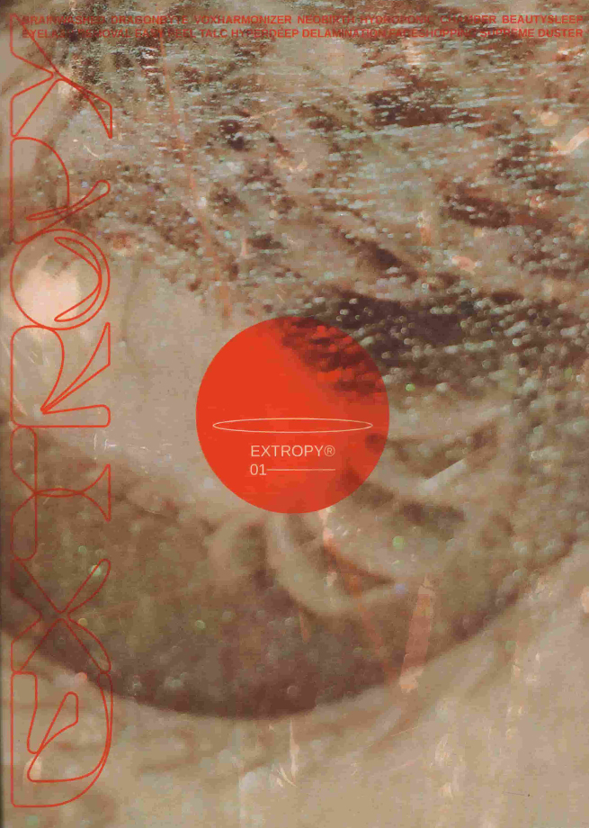

■
Extropy
Speculative Magazine
(05/2019)
With Afonso Matos

Extropy is a speculative magazine that showcases hypothetical future technologies that could enhance human life. It aims to be an extropic approach to how human aesthetic could evolve by means of design, photography and typography. It heavily references corporate identity culture and presents each technology through samples that the buyer could try in order to have a glimpse of the products’ effects. Every technology is fictional but most are based on real scientific knowledge.
Extropy is a speculative magazine that showcases hypothetical future technologies that could enhance human life. It aims to be an extropic approach to how human aesthetic could evolve by means of design, photography and typography. It heavily references corporate identity culture and presents each technology through samples that the buyer could try in order to have a glimpse of the products’ effects. Every technology is fictional but most are based on real scientific knowledge.